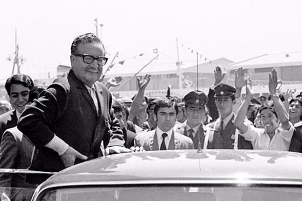

ADMINISTRADOR

Fernando Rojas
Autor de libro sobre Allende y nueva Constitución: "el proceso de transformaciones debe tener una política militar democrática"
Cultura | Blanca Fernández | 15/04/2021

En "La vía insurreccional al socialismo y la vía política de Salvador Allende" (Glück Ediciones), Marcelo Espinoza hace un descarnado análisis de las dos visiones de la izquierda sobre el proceso transformador de las estructuras económicas y sociales en Chile durante la Unidad Popular, en el que sostiene que la vía insurreccional entorpeció el desarrollo de la vía política y democrática del Presidente Allende...